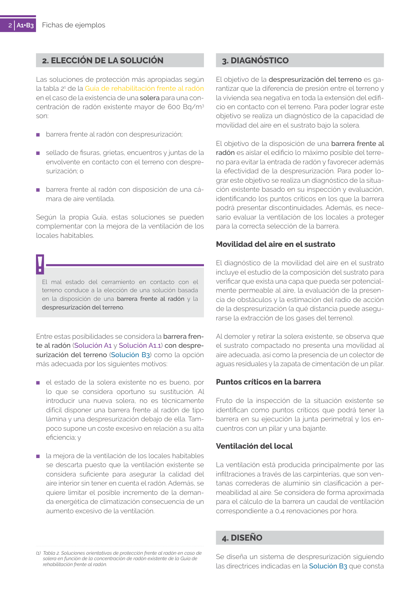

GUIA · Movilidad del aire en el sustrato · versión 2019 · capa guia
Formatos: JSON compacto · Markdown · PDF fuente
Ámbito del documento · texto del ámbito · documento y tablas
Tipo: figuras · nivel 3 · sección estimada: 3. DIAGNÓSTICO · padre: a0005
Movilidad del aire en el sustrato El diagnóstico de la movilidad del aire en el sustrato incluye el estudio de la composición del sustrato para verificar que exista una capa que pueda ser potencial mente permeable al aire, la evaluación de la presen cia de obstáculos y la estimación del radio de acción de la despresurización (a qué distancia puede asegu rarse la extracción de los gases del terreno). Al demoler y retirar la solera existente, se observa que el sustrato compactado no presenta una movilidad al aire adecuada, así como la presencia de un colector de aguas residuales y la zapata de cimentación de un pilar.

PDF fuente redistribuible: copia fiel enlazada en esta página (SHA256 verificado).